Introduction to Audio Analysis
- Weekdays
- Intelligent Software Solutions (ISS)
- Predictive Analytics, Machine Learning, Anomaly Detection, Plan Monitoring
- Evenings & Weekends
What is Audio Analysis?
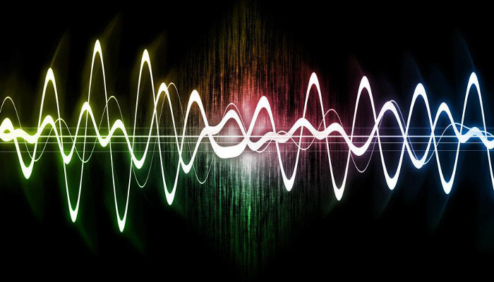
Extracting information from audio signals
Leveraging techniques from Digital Signal Processing (DSP) and Machine Learning.
- Music Information Retrieval
- Speech Processing
Music Information Retrieval
- Recommender Systems
- Instrument Recognition
- Music Transcription (Beats, Notes, Chords, Key, etc.)
- Genre Classification
- Score Following
- Query by Singing/Humming
- Similarity
See ISMIR and MIREX for more info on current research.
Speech Processing
- Voice Recognition
- Speaker Recognition
- Speaker Diarization
- Voice Analysis
- Speech Enhancement
Audio in the Time Domain
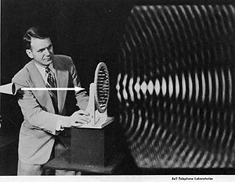
Pulse-code Modulation (PCM)
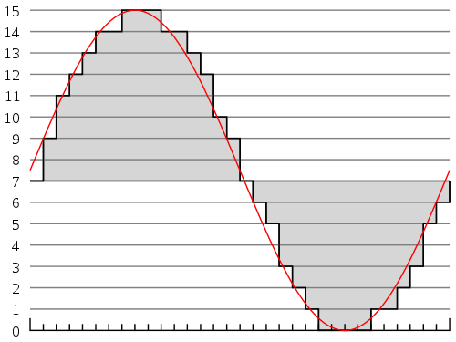
Example 4-bit PCM Encoding
Sampling Rate & Nyquist Frequency
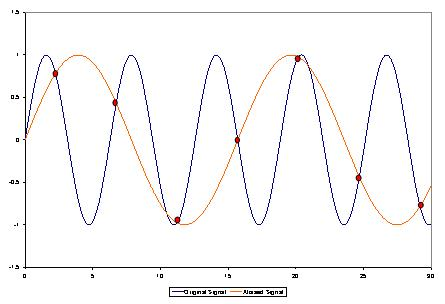
- Nyquist Freq. = 2 times max frequency
- CD Quality Audio (44.1 KHz, 16-bit stereo)
Audio in the Frequency Domain
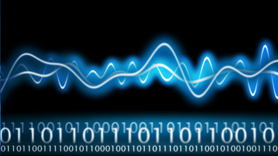
Fourier Transforms
Signal represented as a sum of simple sine and cosine functions.
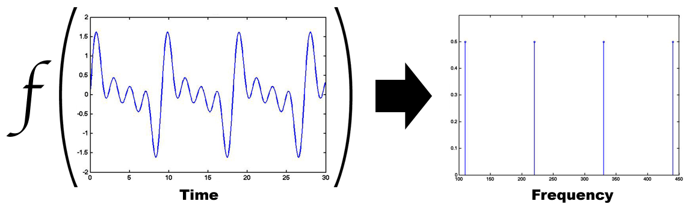
How do we move from time -> frequency and vice versa?
Fourier Transforms for Mathematicians
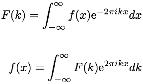
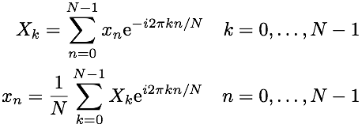
Fourier Transforms for the rest of us
Two periodic signals, A (input signal) and B (generated).
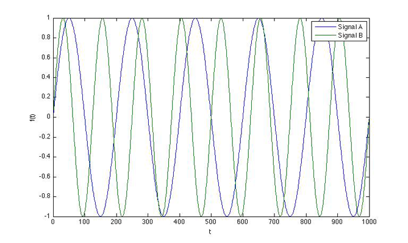
What happens when we multiply them together and sum the area underneath?
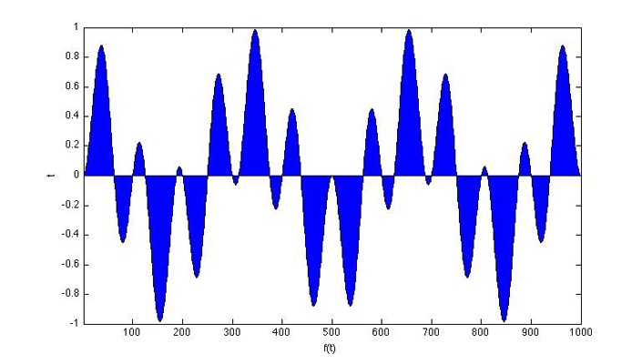
What if the signals share the same frequency, say A X A?
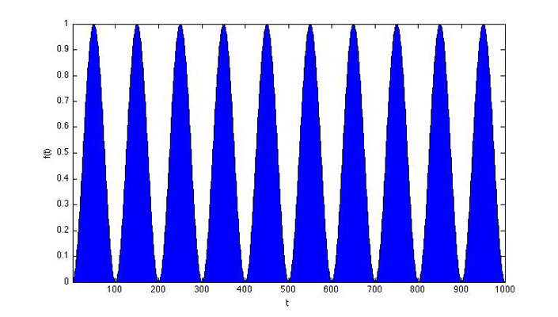
Discrete Fourier Transform (DFT)
Evenly spaced frequencies from 0 hz to the sampling frequency.
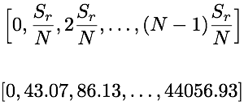
Frequency bins for 1024 samples @ 44.1 KHz
No temporal information in the frequency domain
- What if you have two sounds at different times?
- How do you deal with this?
The Short-Time Fourier Transform (STFT)
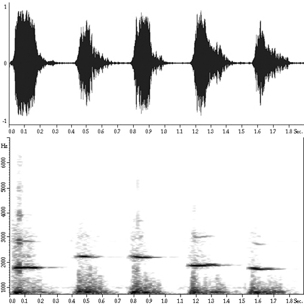